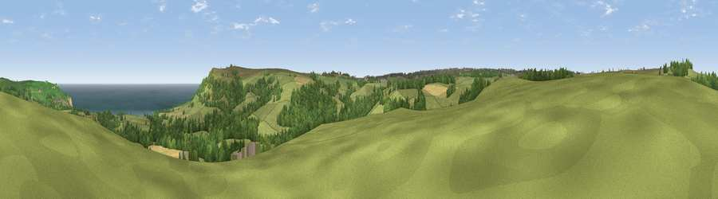

Viewpoint near Fylingthorpe
#4644 in England · top 13% of its area beats it · near FylingthorpeWhere it is
The exact computed spot (NZ 93588 02888). Click the marker for map links.
The view, rendered

A 360° render of this exact spot computed from the terrain model, tree cover and land cover — summer colours, afternoon light, calibrated against photographs of famous viewpoints. Real trees, hedges and buildings will differ in detail.
The panorama
Grey silhouette: terrain skyline in each direction (720 bearings, Earth curvature and refraction included). Dashed green: skyline with trees (+15 m) and buildings (+8 m) as obstacles. Blue strip: how far the ground is visible on each bearing.
Where the view opens
Wedge length = distance to the farthest visible ground on that bearing (vegetation-aware). Rings at 10, 25 and 50 km.
What fills the view
56% grassland · 26% woodland · 12% water · 6% cropland ·
Angular shares of the visible panorama (visual magnitude), not map area. Landscape diversity 0.49 (0–1 Shannon).
Key numbers
More beautiful places nearby
The staircase of upgrades: each row has a higher view potential than everything closer. Driving times are estimates from straight-line distance, calibrated against real road routing — check an actual route before setting out.
| Place | Direction | Drive | Score |
|---|---|---|---|
| Viewpoint near Fylingthorpe | N · 2 km | ~4 min | 73.5 |
| Viewpoint near Fylingthorpe | NNW · 2 km | ~5 min | 81.1 |
| Viewpoint near Ravenscar | ESE · 2 km | ~6 min | 81.5 |
| Viewpoint near Ravenscar | ESE · 3 km | ~7 min | 90.0 |
| Viewpoint near Easington | NW · 26 km | ~42 min | 90.2 |
| The Knoll | SSW · 438 km | ~411 min | 91.0 |
54.41284, -0.55946 · source: screening · position refined by local search. Computed location — check access rights before visiting.